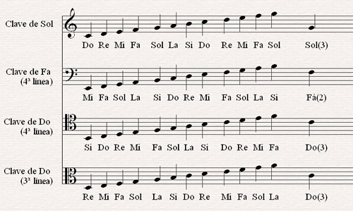
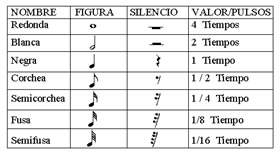
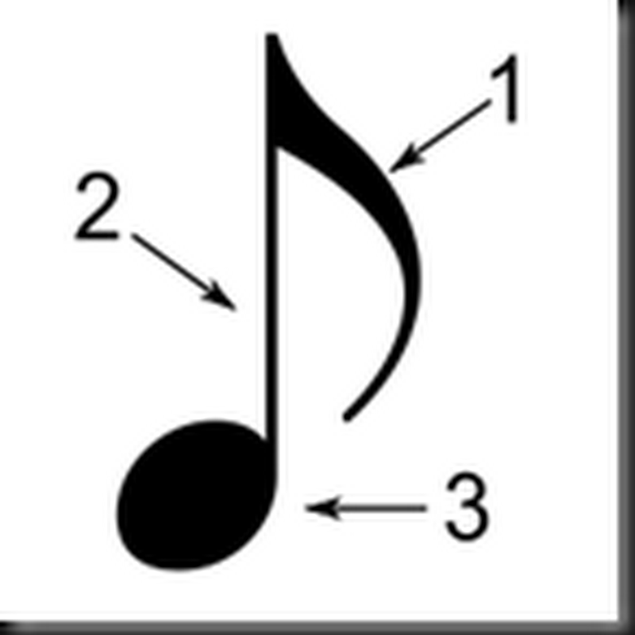
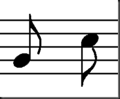

Notación musical
La notación musical es el conjunto de signos convencionales que indican gráficamente el sonido en todos sus parámetros (altura, intensidad, duración, expresión... )
-
Notación de altura
En este punto tenemos tres conceptos clave. Primero, el pentagrama es el conjunto de 5 líneas que ves en la imagen. Sobre las líneas y los espacios se escriben la mayor parte de signos musicales. Después, las notas son los signos que representan la altura relativa de los sonidos según su posición en el pentagrama. Por último las claves son esos dibujos a la izquierda del todo y hacen que podamos ubicar el sonido que representan las notas.
 -
Notación de duración
Con este tipo de notación indicamos cuánto tiempo va a durar un sonido. Para ello tenemos las figuras, los silencios y los signos de prolongación.
 -
Notación de escritura
Los elementos del punto anterior no pueden dibujarse de cualquier manera, principalmente es importante saber que la plica (2) debe colocarse a la derecha si su dirección es hacia arriba (por debajo de la tercera línea del pentagrama) y a la izquierda si es hacia abajo (por encima de la tercera línea del pentagrama); la cabeza (3) debe atravesar la línea u ocupar todo el espacio del pentagrama y los corchetes (1) siempre van a la derecha y en dirección a la plica.
 